Amides and Imides
The functional group of an amide is an acyl group bonded to a nitrogen atom. They have an NH2, NHR, or NR2 group in place of the OH group of the carboxylic acid.

Primary amides contain the -CONH2 group, while secondary and tertiary amides contain the -CONHR and -CONR2, repsectevely. Amides are named by dropping the suffix -oic acid from the IUPAC name of the parent acid, or -ic acid from its common name, and adding -amide. If the nitrogen atom of an amide is bonded to an alkyl or aryl group, the group is named, and its location on nitrogen is indicated by N-. Two alkyl or aryl groups on nitrogen are indicated by N,N-di-. N,N-Dimethylformamide (DMF) is a widely used polar aprotic solvent (Section 9.3D).
Cyclic amides are given the special name lactam. Their names are derived in a manner similar to those of lactones, with the difference that the suffix -lactone is replaced by -lactam.

Amides are very different because of the delocalization of the lone pair into the carbonyl group. This makes amides more acidic but less basic and protonation occurs on oxygen rather than nitrogen. Amides have pKa values of around 15 when they act as acids, making them some 1010 times more acidic than amines. The pKa of protonated amides is around 0, making them some1010 times weaker as bases.
Finally, delocalization of the nitrogen lone pair reduces the electrophilic character (partial positive charge) on the carbonyl carbon, thus reducing the susceptibility of amides to nucleophilic attack. The amide −NH group is a good hydrogen bond donor, while the amide carbonyl is a good hydrogen bond acceptor, allowing both primary and secondary amides to form strong hydrogen bonds. As we will see in Chapter 27, the ability of amides to participate in both intermolecular and intramolecular hydrogen bonding is an important factor in determining the three-dimensional structure of polypeptides and proteins.
Imides
The functional group of an imide is two acyl groups bonded to nitrogen. Both succinimide and phthalimide are cyclic imides.
Imides (pKa 8–10) are considerably more acidic than amides and readily dissolve in 5% aqueous NaOH by forming water-soluble salts. We account for the acidity of imides in the same manner as for the acidity of carboxylic acids (Section 17.4), namely the imide anion is stabilized by delocalization of its negative charge. The more important contributing structures for the anion formed by ionization of an imide delocalize the negative charge on nitrogen and the two carbonyl oxygens.
Sulfonamides
A sulfonamide can be considered as derived from a sulfonic acid by replacing a hydroxyl group with an amine group.
Sulfonamides derived from ammonia and primary amines are also suffi ciently acidic to dissolve in aqueous solutions of NaOH or other alkali metal hydroxides by form- ing water-soluble salts. The pK a of benzenesulfonamide is approximately 10. We account for the acidity of sulfonamides in the same manner as for imides, namely the resonance stabilization of the resulting anion.
Sulfonamides can be prepared in the laboratory in many ways. The classic approach entails the reaction of sulfonyl chlorides with an amine.
RSO2Cl + R2NH → RSO2NR2 + HCl
Reduction of amides
Lithium aluminum hydride reduction of amides can be used to prepare 1°, 2°, or 3° amines, depending on the degree of substitution of the amide. Hydride ion adds to the carbonyl carbon. A Lewis acid-base reaction between −O – (a Lewis base) and AlH3 (a Lewis acid) forms an oxygen-aluminum bond. Rearrangement of electron pairs ejects H3AlO2– and generates an iminium ion. Because aluminum hydroxides are somewhat acidic, H3AlO2– is a reasonably good leaving group. In the final step the iminium ion adds a second hydride ion to complete the reduction.
